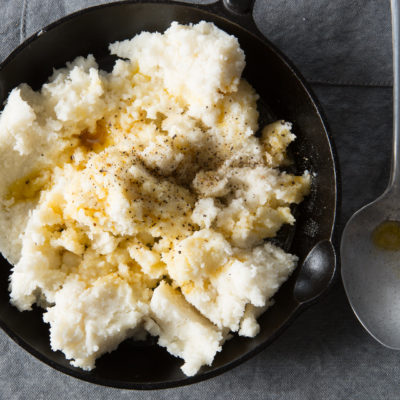
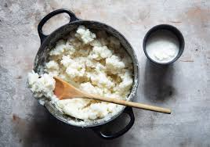

Ingredients
- Main
- Maize Meal
- Water
- Salt
- Optional
- Milk - For Softer pap
- Butter - For a richer flavour
- Sugar
- Honey
- Lemon Juice - For a sweet pap
Instructions
Slap Pap (Soft)

Ratio : 1 cup of maize meal to 4 cups of water
-
Boil Water:
Bring 4 cups of water and ½ tsp salt to a boil in a pot. -
Add maize meal:
Gradually whisk in 1 cup of maize meal, stirring contiuously to prevent lumps. -
Simmer:
Reduce the heat to medium-low and simmer for about , stirring often. -
Finish:
Stir in optional butter and serve warm.
Stywe Pap (Stiff)
Ratio : 2 cups of maize meal to 2 ½ cups of water
-
Boil Water:
Bring 2 ½ cups of water and 1 tsp salt to a boil in a large pot. -
Add maize meal:
Slowly pour in the maize meal. Do not stir immediately; let it sit on top of the water for a minute, then stir well with a wooden spoon, mashing against the sides to break up lumps. -
Steam:
Reduce heat to low, cover with a lid, and let it steam for 10 - 15 minutes -
Stir and finish:
Stir well again, cover, and cook for another 10 minutes until firm and cooked through. Serve hot.
Phuthu Pap (Crumbly)
Ratio : 2 ½ cups maize meal to 2 cups of water.
-
Boil Water:
Bring 2 ½ cups of water and salt to a gentle boil in a pot. -
Add maize meal:
Sprinkle the maize meal evenly over the water, forming a heap in the center. Do not stir. -
Steam:
Cover the pot tightly with a lid and steam on the lower heat for 10 - 20 minutes. -
Fluf:
Use a fork to gently mix and seperate the grains into a crumble-like texture. -
Cook further:
Cover and steam for another 10-20 minutes, fluffing occasionally with a fork until fully cooked and crumbly
You can serve these in many ways: